施展 武汉光电国家研究中心 光电信息存储研究部
https://shizhan.github.io/ https://shi_zhan.gitee.io/
服务器整合 → 多租户共享 → 性能干扰 → SLO 违约 → 性能预测 → 服务质量保障
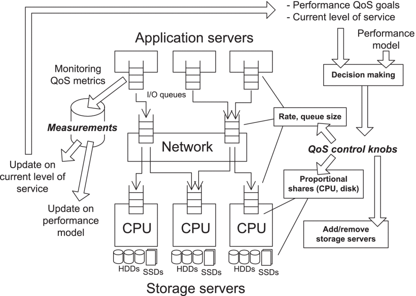
云计算与多租户存储
Source: https://www.kiwiqa.com/top-6-cloud-computing-trends-impacting-cloud-adoption-in-2020/
Source: https://www.canalys.com/newsroom/worldwide-cloud-market-q320
Pandemic boosts cloud consumption by a third in Q3 2020
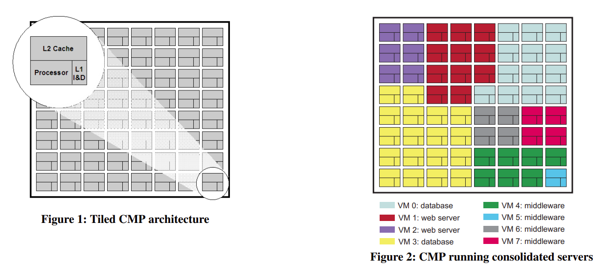
Source: Virtual hierarchies to support server consolidation, ISCA '07
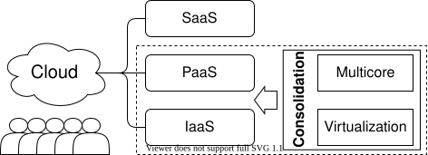
Source: Beyond Server Consolidation, Queue 2008
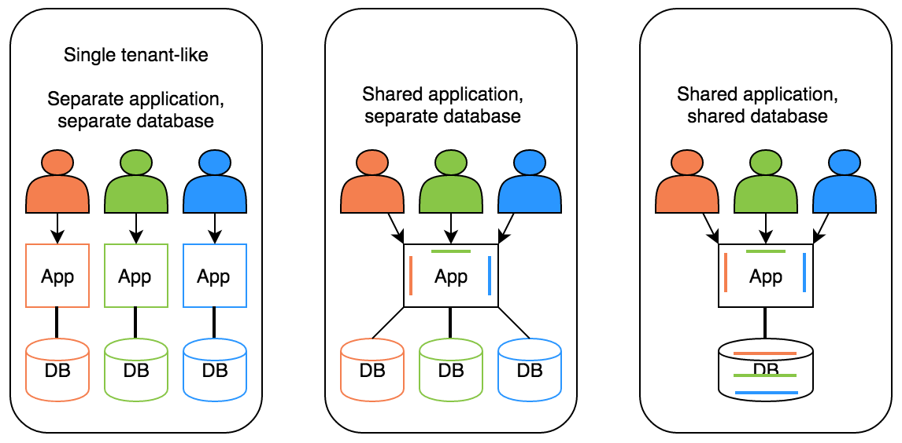
Source: What is a multi-tenant system?
Source: SLO（服务等级目标）与 SLA（服务等级协议）
Source: SLA vs. SLO vs. SLI: What's the difference?
Source: 服务级别指标(SLI)和服务级别目标(SLO)示例
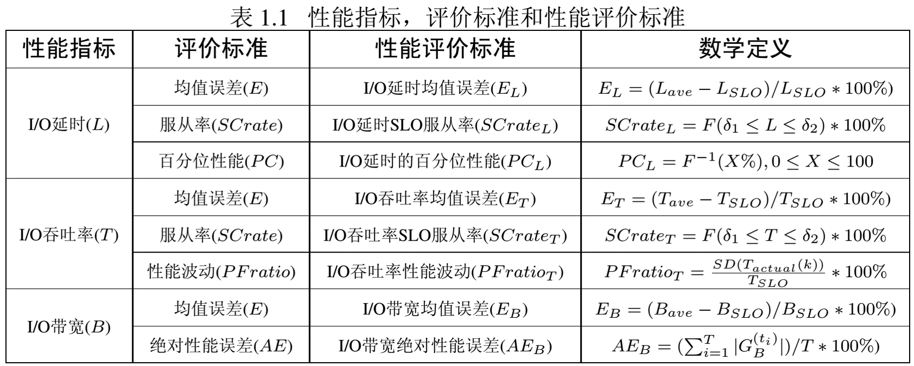
共享资源下的性能竞争
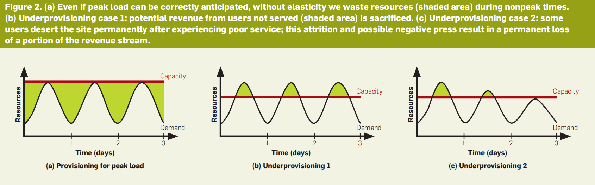
Source: A View of Cloud Computing. CACM 2010
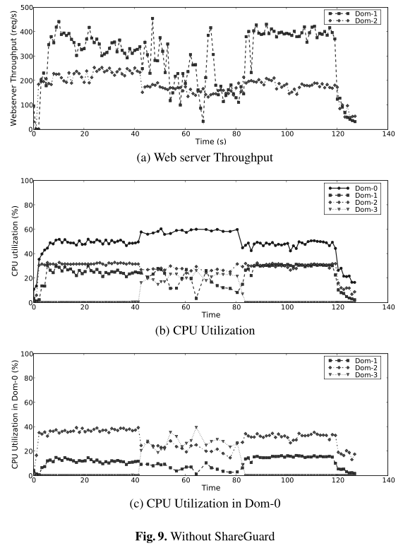
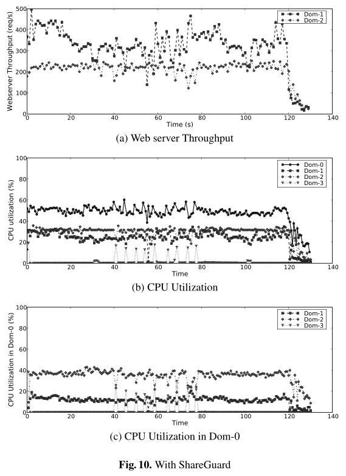
Source: Enforcing performance isolation across virtual machines in Xen, Middleware '06
网络领域很早就开始探索……
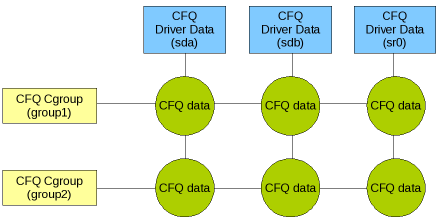
Source: Variations on fair I/O schedulers, 2008
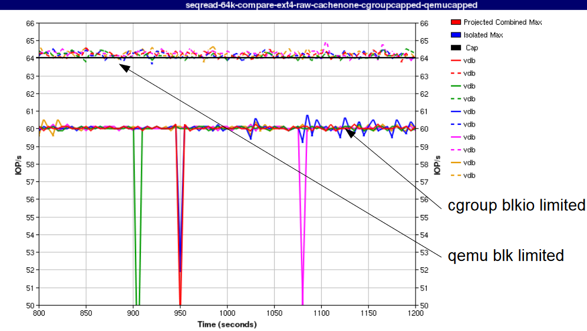
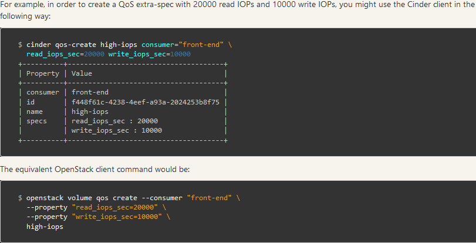
Source: IO Throttling in QEMU
io throttling
dmclock
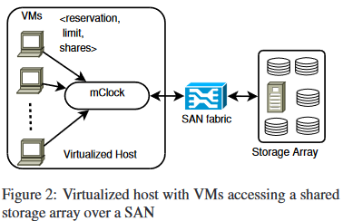
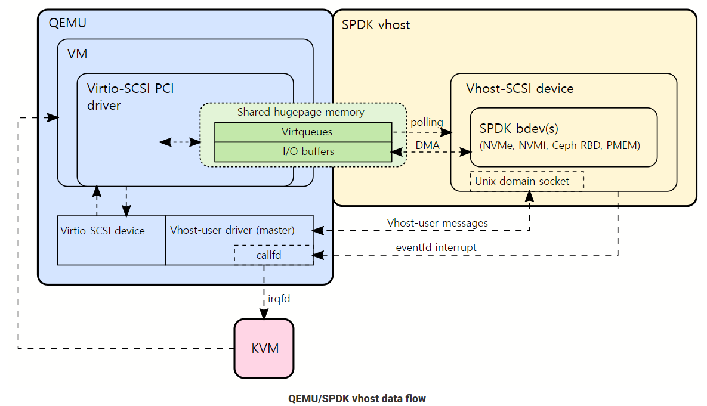
Source: mClock, OSDI'10
SLO 违约的归因与预算
本讲不再重复现象成因，而是回答下一个问题： 承诺了 P99，违约了怎么办？
长尾的产生机理、经典应对（容错/容滞/对冲/关联请求）与工业案例，详见《对象存储》挑战二
违约不是一种病，是三种病共用一个症状
归错因则治错病——这是把 SLO 从"监控指标"变成"可执行调控"的第一步
租户 iii 只要有任一邻居处于突发态，就可能被拖累：
Pi(违约)=1−∏j≠i(1−pj)P_i(\text{违约}) = 1 - \prod_{j \neq i}\left(1 - p_j\right) Pi(违约)=1−j=i∏(1−pj)
与《对象存储》的区别：那里是一个请求扇出到 100 台服务器（fan-out）；这里是 NNN 个租户扇入同一台设备（fan-in）。同样的代数，相反的拓扑。
SLO 的补集不是"失败"，而是一笔可以花的预算：
Error Budget=(1−SLO)×统计窗口\text{Error Budget} = (1 - \text{SLO}) \times \text{统计窗口} Error Budget=(1−SLO)×统计窗口
思路转变：从"不许违约"到"违约是可管理的预算"——预算没花完，就可以拿去换升级、换成本、换新特性
燃尽速率：burn rate=实测违约率1−SLO\text{burn rate} = \dfrac{\text{实测违约率}}{1 - \text{SLO}}burn rate=1−SLO实测违约率，为 1 时预算恰好在窗口末尾用尽
Source: Google SRE Workbook, Ch.5 Alerting on SLOs
《对象存储》给出的经典解法——对冲请求（P95 未返回则发副本请求）——在多租户下会反噬：
多租户下的修正：为对冲设置每租户配额，并将跨租户对冲的开销计入发起方的错误预算
单机视角的最优解，在多租户视角下可能是负和博弈——这是方法层必须重新审视现象层结论的原因
事后容滞的天花板已经触到了——下一步必须预测
Source: Decision-Making Approaches for Performance QoS, TPDS 2019
三条技术路线
反馈控制系统：测量输出 → 比较设定值 → 计算控制量 → 调整输入
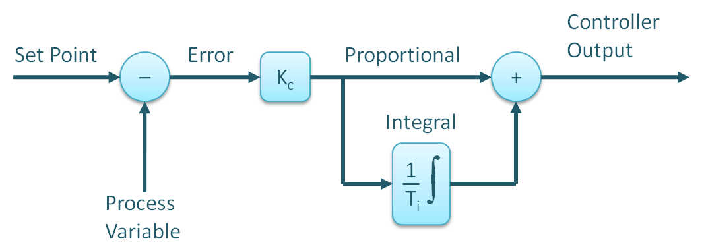
Source: PID Controllers Explained
PSLO 在课题组研究脉络中的位置，见后文「我们的工作」（EuroSys'16 作为演进线起点；此处为控制论方法代表案例，完整讲解不重复）
反过来，它也划出了这条路线的边界：模型一旦不准，控制器就失灵
该工作在课题组研究脉络中的位置，见后文「我们的工作」
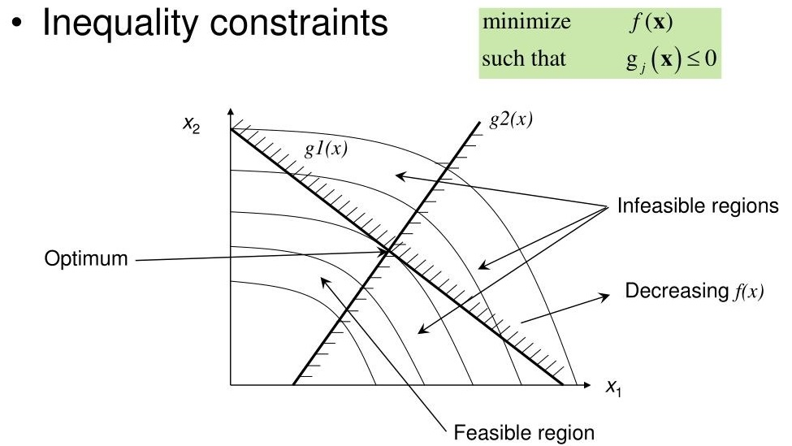
将 QoS 保障建模为优化问题：目标函数 + SLO 约束 + 资源约束
max∑iwi⋅QoSis.t.li≤liSLO, ∀i;∑iri≤Rtotal\max \sum_i w_i \cdot QoS_i \quad \text{s.t.} \quad l_i \leq l^{SLO}_i,\ \forall i; \quad \sum_i r_i \leq R_{total} maxi∑wi⋅QoSis.t.li≤liSLO, ∀i;i∑ri≤Rtotal
从"反应式"到"预测式"：用数据驱动方法学习系统行为
排队论能给出延迟分布的解析解，但 M/M/1 的三条假设在真实系统都会破：
假设越贴近真实，模型越难解析求解——这正是机器学习方法的切入点
排队论建模的完整推导（联合操作抽象、accept() 等待时间建模、4.44% 平均误差）详见《对象存储》挑战三
时序图的抽象：节点 = 存储组件（OSD / 磁盘 / 缓存），边 = 数据通路与依赖，节点属性随时间演化 = 负载与延迟
尾延迟的成因往往是某个组件在某个时刻变慢并沿数据通路传播——这恰是时序图能表达而前三代不能的
干扰 → 不可控的性能竞争 ↓ 违约 → 可归因、可预算的 SLO 偏离 ↓ 预测 → 从被动到主动的调控
三条路线殊途同归：预测是 QoS 保障的关键
2016 → 2026：从控制论到图预测的方法论演进
本讲聚焦系统层 QoS 保障，设备层优化见 M3《闪存存储系统设计》
本表为系统层 QoS 主线 9 篇；设备层三篇（ICCD'22 / DAC'23 / CoFS TCAD'24）见《闪存存储系统设计》
建模细节与实验图表详见《对象存储》挑战三
课题组在设备层同期开展了三项工作，与本讲的系统层预测同属一个研究项目：
一体两面：系统层用预测保障 SLO，设备层用预测优化 SSD——同一套预测思想，作用在不同的抽象层
三项工作的完整方法与实验，详见专题讲座《闪存存储系统设计：从介质特性到服务质量》
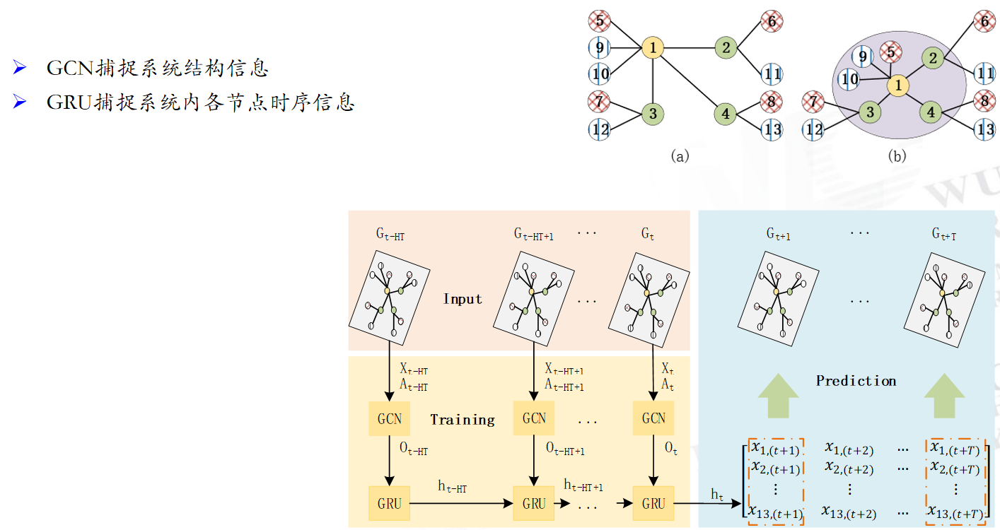
节点 = 存储组件，边 = 数据通路，时序特征 = 请求到达与处理延迟
方法论演进线：控制论 → 约束优化 → 机器学习 → 图预测 → 知识图谱
一以贯之：用预测方法保障存储系统服务质量
with ThreadPoolExecutor(max_workers=1) as executor: futures = [executor.submit(access_obs) for i in range(100)]
s3bench ... -numClients=8 ...
预测题（请先写下你的判断，再观看演示）：
突发负载下（并发从 10 突增至 100），以下哪种预测方法误差更大？
A) 移动平均（MA） B) ARIMA C) 机器学习（Graph3PO）
理由：________________